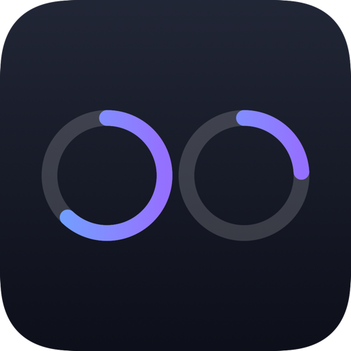
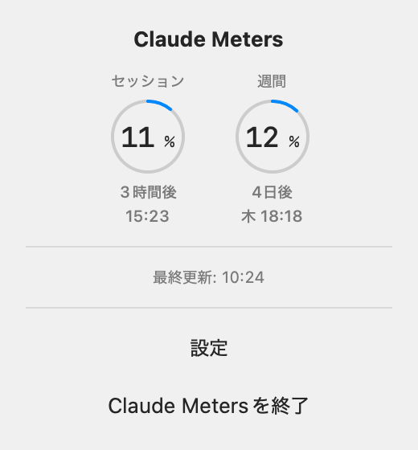

Claude Codeの
無料・

含まれないもの：使用量の履歴、グラフ、予測、通知、複数アカウント、モデル別の内訳。
ClaudeMeters-v*-macOS.dmgをダウンロードします。「Source code」はソースコードなので不要です。.dmgを開き、Claude Meters.appをApplicationsフォルダにドラッグします。v0.1.1以降のリリースはDeveloper ID証明書で署名され、Appleの公証も済んでいるため、Gatekeeperの警告なしで開けます。自動更新はしません。設定の「更新を確認」で、新しい版が出ているかを確認し、リリースのページを開けます。
Claude Meters自身は認証情報を要求・保存しません。Claude CodeがすでにmacOSのKeychain（Claude Code-credentials）に保存しているOAuthトークンを読み取り、それを使ってAnthropicのUsage APIにセッションと週間の使用率を問い合わせます。
トークンは、Claude Code自身がこの項目の保存に使っている/usr/bin/securityコマンド経由で読み取ります。そのため、通常はKeychainの許可ダイアログは表示されず、Claude Codeがトークンを更新したあとも再表示されません。キーチェーンがロックされているときなどにダイアログが出たら、ログインパスワードで許可してください。
ほかの通信は、設定の「更新を確認」を押したときに、GitHubへ最新のリリースを問い合わせるものだけです。
非公式のツールで、ドキュメントのないAPIを使っています。このAPIはAnthropicの公開・ドキュメント化されたAPIではなく、予告なく変更されたり、使えなくなったりすることがあります。応答が想定と合わなくなったときは、推測せずに失敗（–）として表示します。